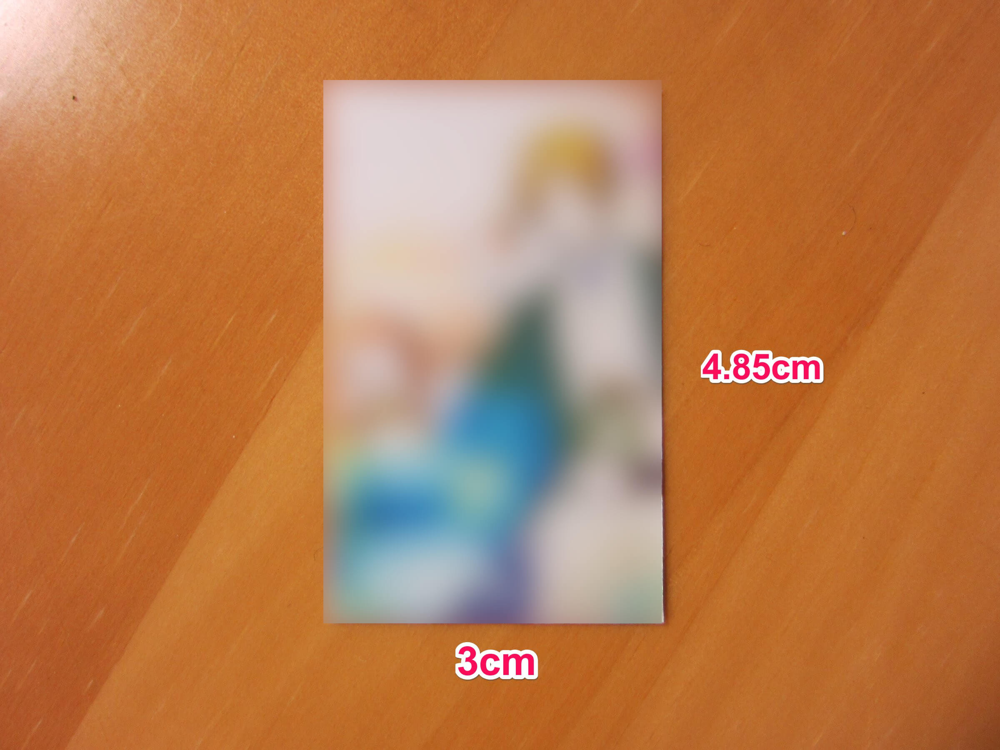
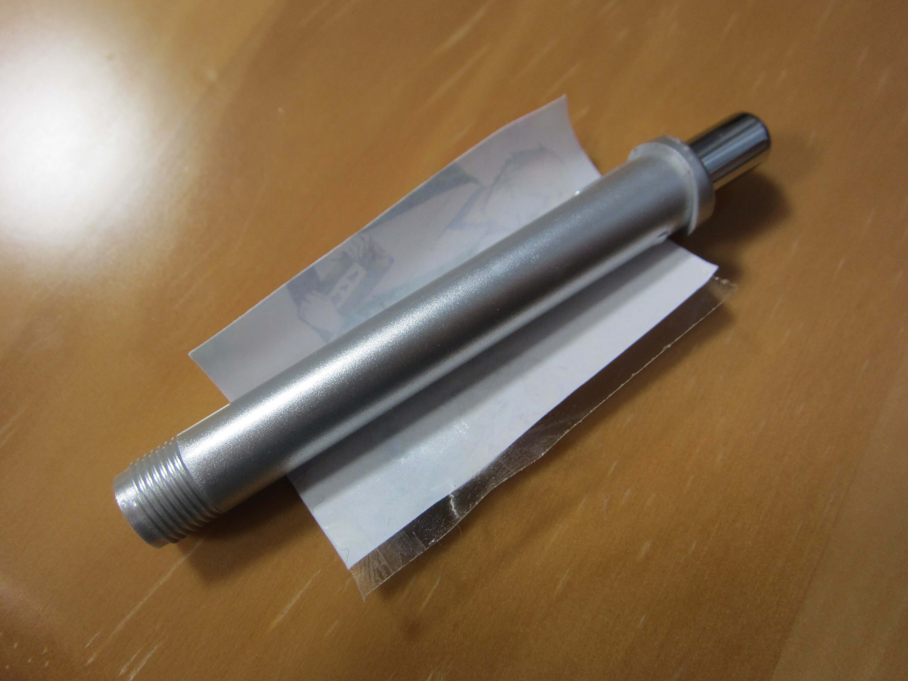
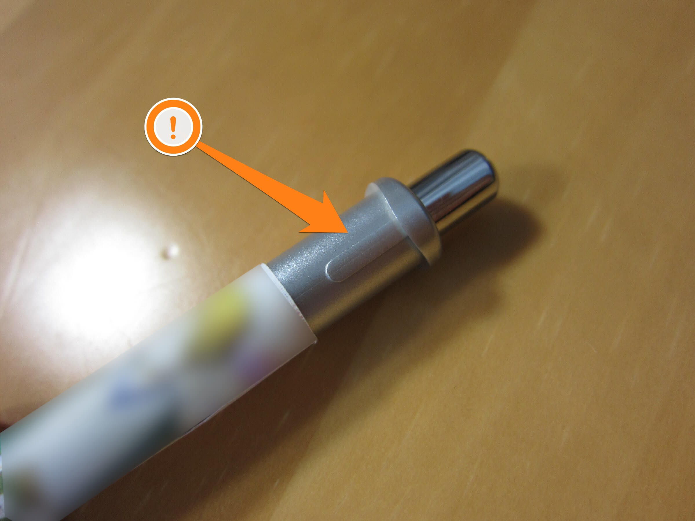
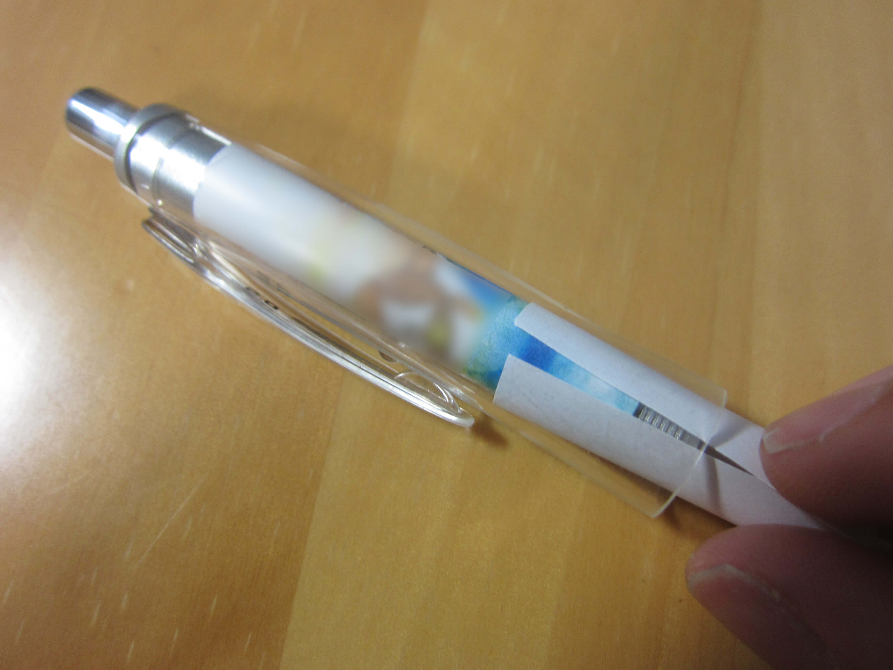

【簡単】ドクターグリップで痛シャーペンを作ろう！
今回はドクターグリップで痛シャーペンを作る方法を紹介します。みんなで痛シャーペンを作って、新学期に自分のアイデンティティをアピールしよう！！
必要なもの
- 上半分が透明になっているDr.GRIP
- パソコンやスマホなど、画像を好きなサイズに印刷できるツール
- プリンター
- カッターナイフ・はさみなど
- セロハンテープ
画像の用意
紙のサイズ
ドクターグリップの中に入れたい画像を準備して印刷します。

ドクターグリップの中に挟み込む紙のサイズは、横3cm、縦4.85cmです。
画像のトリミング
Photoshopなどを使って画像を加工するなど、自分なりの方法で印刷できる方は、読み飛ばしてもらってかまいません。ここではおすすめの方法をご紹介します。
この方法では、Windowsに標準搭載されているソフト「メモ帳」とGoogle Chromeなどのブラウザを使用します。
縦長の画像の場合は横のサイズを、横長の画像の場合は縦の長さを指定して、縦横比を保ったまま縮小して印刷し、はみ出た部分をカッターナイフで切ります。
- まず、好きな場所に「新しいフォルダ」を作成してください。
- 印刷したい画像を新しいフォルダに保存し、img.jpg（img.png)という名前に変更してください。
- スタートメニューから「メモ帳」を起動して、下のコードをコピペし、grip.htmlという名前で新しいフォルダに保存してください。
縦長の画像の場合
<img src="img.jpg" style="width:3cm" />横長の画像の場合
<img src="img.jpg" style="height:4.85cm" />img.jpgはフォルダに保存している画像のファイル名を指します。画像ファイルがpng形式の場合は、img.pngに書きかえてください。
保存したgrip.htmlを右クリックして「プログラムから開く > Google Chrome」を選択します。画面上に小さく画像を印刷されたら、そのページをプリンターで印刷してください。
印刷した画像を、横3cm、縦4.85cmになるようにカッターナイフなどで切って調整してください。
紙にテープを貼る
まず、Dr.GRIPの透明部分と筒をを分解してください。
筒と透明部分に分解できたら、テープを貼る前に紙を筒に巻きつけて、紙に型をつけておきます。

型がついたらテープを内側に貼り、紙同士を貼り合わせます。

テープを貼るときは紙同士がぴったり重なるように、気持ち緩めに貼ってください。きつく巻いてしまうと、ドクターグリップの上側に突起があり、この段差を超えられなくなります。
紙をドクターグリップに入れる
最後に、Dr.GRIPの筒と透明部分を合体させてください。そして、用意した紙を透明部分と筒の間に入れ込んでください。紙の継ぎ目をクリップの下に隠すとキレイに見えます。

写真のようにいらない紙を丸めたもので押し込むと簡単です。
完成
あとは下半分を取り付けて完成です。お疲れ様でした！！٩(ˊᗜˋ*)و